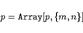
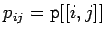
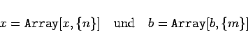
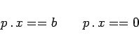

Inhalt Index DeskTop Bronstein

 Computeralgebrasysteme Anwendungen von Computeralgebrasystemen Elemente der linearen Algebra
Computeralgebrasysteme Anwendungen von Computeralgebrasystemen Elemente der linearen Algebra


Im Abschnitt Mathematica, Listen wurden der Begriff der Matrix und eine Reihe von Operationen mit Matrizen auf der Grundlage von Listen definiert. Der Einsatz von Mathematica im Rahmen der Theorie linearer Gleichungssysteme baut auf diesen Festlegungen auf. Es sei im folgenden
|  | (20.65) |
eine Matrix vom Typ (m,n) mit den Elementen , des weiteren seien
|  | (20.66) |
zwei n- bzw. m-dimensionale Vektoren. Mit diesen Definitionen läßt sich das allgemeine System linearer inhomogener bzw. homogener Gleichungen schreiben (s. Lösung linearer Gleichungssysteme)
|  | (20.67) |